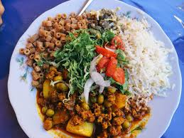

El saice es otro plato tradicional de la gastronomía boliviana, especialmente popular en la región de Cochabamba. Es un guiso a base de carne de res, maíz y una variedad de vegetales, que se caracteriza por su sabor robusto y su textura sustanciosa. Ingredientes Principales: Carne de res: Generalmente se usa carne de res cortada en cubos. Maíz: Puede ser maíz en grano o mote (maíz cocido y deshidratado). Papas: Cortadas en trozos. Zanahorias: También cortadas en trozos. Cebolla: Picada. Ajo: Para dar sabor. Tomate: Picado en cubos. Pimientos: Cortados en tiras. Ají rojo o colorado: Para dar color y sabor. Comino y orégano: Para sazonar. Caldo: De carne, para cocinar el guiso. Papas: Cortadas en trozos. Preparación: Preparación de la carne: La carne de res se cocina en una olla con agua y sal hasta que esté tierna. Luego se retira y se corta en cubos. Cocción del maíz: Si se usa mote, debe cocerse previamente. Si se usa maíz seco, se debe remojar y cocinar hasta que esté suave. Salteado de vegetales: En una sartén aparte, se saltean la cebolla, el ajo, el tomate, y los pimientos. Se añaden los condimentos como el comino y el orégano. Unión de ingredientes: Se agregan los vegetales salteados, las papas, las zanahorias y el maíz al estofado de carne. Se incorpora el caldo y se cocina todo junto hasta que las papas y las zanahorias estén tiernas y los sabores se mezclen bien. Ajuste de sazón: Se ajusta el sazón al gusto, añadiendo más sal, ají, o cualquier otro condimento necesario.
SAICE
Todo lo que necesitas saber

saice un plato tipico tarijeño

un plato muy conocido